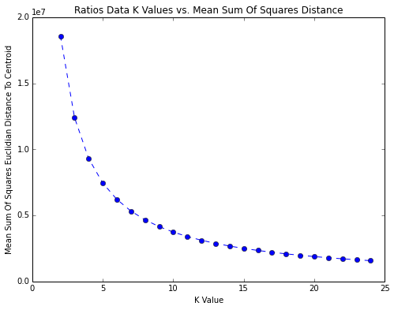
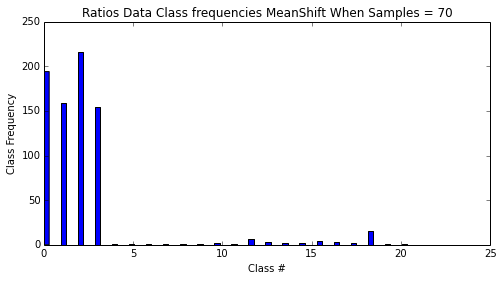
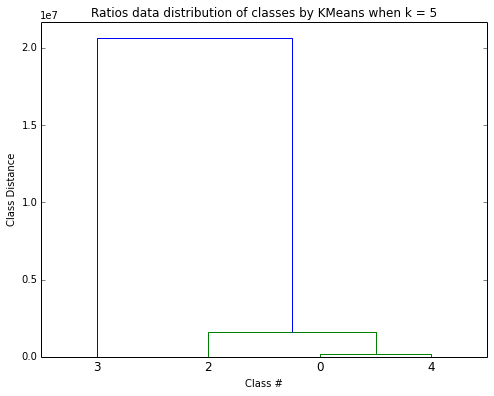
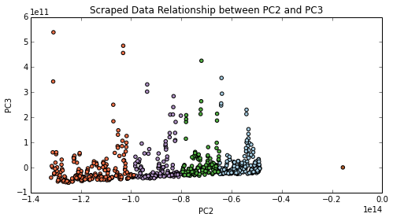
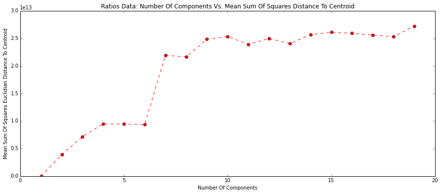
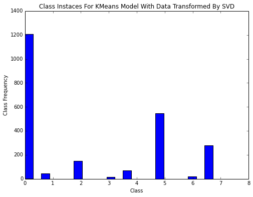

Unsupervised Learning
Discovering The Hidden Classes Of The S&P 500
First Steps: The No Feedback Problem
The biggest challenge when running unsupervised learning models is that there is almost no feedback. That is to say, one model's output isn't inherently better than another's, there is no accuracy or precision metric that one could invoke, because there is no baseline of truth. Therefore, one needs to ask the question, what is useful, and what do we want to get out of these classifications. Even this question is difficult to answer because unsupervised learning is supposed to help you discover these truths.
The solution to this problem was to test the one realistic metric we had of a classifier's success, the density of a cluster, which we measured as the mean distance of all the points to the center of the cluster, and how this changed when we adapted our machine learning model.
We Started With KMeans : Selecting K (Number Of Classes) as a Function of Cluster Density
The KMeans model divided your data, clustering it into a number of categories that one specifies at the outset. This algorithm is what is known as a centroid-based approach to unsupervised learning, where all clusters form around a single center (one point in zero dimensions), and not, say a vector (1 dimensional division within the data). The graph below presents our conclusions when studying the Quandl data. As we increased the number of clusters, our density dropped sharply, but marginal size of the drop decreased with every new class added. This is typical of any clustering model, and is known as the "Elbow" approach. We found that the first four classes accounted for the vast majority of the drop in distance, which told us right away that at best, we were looking at a handful of major classes.
Automatic Class Selection
As we delved deeper into the classifications, we tried multiple models, one that selects classes automatically called MeanShift, and another that uses another concept called a Gaussian Mixed Model, that turns the entire dataset into a continuous distribution of probabilities, essentially a function that says how likely any given point is to be a member of sub-population. Both MeanShift and DPGMM do the same thing at heart: determine the number of classes for you.
Automatic Class Selection
The results confirmed our suspicion that there were a handful of major classes, and perhaps a great deal of small ones. Next, we did a study of how closely in terms of overall different classes were, and using a dendrogram, we calculated the pairwise distance between every class by looking at the distribution of variables (dimensions). We display the results below.
We noticed that most of the classes were very closely grouped together, and that there was always one class, and only one class that was an outlier. This, of course, posed certain difficulties for us when attempting to distinguish between classes. It also said something very important about our data set, most companies were very similar. Perhaps if we had looked at a larger list of companies, including small ones, we would have noticed something different. One of the solutions for dealing with the confusion inherent in the data is dimensionality reduction.
Dimensionality Reduction : Singular Value Decomposition
One of the first things we tried when assembling our dataset was dimensionality reduction. However, because one of the steps in our data preparation was dividing by assets, we found it immensely difficult to generate more than one major class that encompassed the majority of the data. In the end, because we expected to feed our results to the regression, we decided not to go this route for most of our testing. However, when we did use singular value decomposition, which is a mathematical transformation of a way to find the most important aspect of the data to generate the most important components of our dataset, we found some interesting results
Out of all the components of the data, PC2 or the second component that resulted after the singular value decomposition operation, was absolutely instrumental in determining class. In fact, company classes could be guessed with an astonishingly high accuracy, simply by looking at the their value along a one dimensional axis of PC2 values.
Sometimes, less information is better, and we acknowledged this when we performed a study of mean sum of squares distance (cluster density) between every point and the center of its cluster using our principal components.
We found that 4-6 dimensions was the magic range that allowed us to understand the data, but also minimize the average distance between the centroid (zero dimensional center of every cluster) and the points belonging to each class. So, if we were planning to use singular value decomposition, we need not take all 65 dimensions, but rather the first 4-6, which is what we did when determining how many classes using KMeans.
We got results that were confirmed by multiple models, one major class, three minor ones, and a number of other tiny classes.
Conclusions :
We discovered that there were four important classes, one of which was more important (in terms of the number of data points encompassed by it) than the others. We discovered that even though the feedback was limited, we could reasonably say that when we increased class density, we got better results, but that beyond a certain point, class density did not improve by much
We discovered that most companies stay within a single class over a ten year period, but some companies, we will call them "dynamic", such as Apple Inc ("AAPL") switched classes constantly over a multiple year period.
We discovered that the difference between most classes were not great, and that most companies in the S&P 500 resemble each other. However, we also found that a handful of companies were outliers, and their classification was far from the majority.
Finally, we discovered that singular value decomposition is a useful tool, and perhaps more useful than any other attempt to generate a relativistic view of data (how one company differs from another regardless of assets).